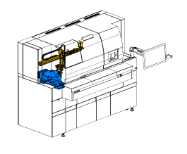
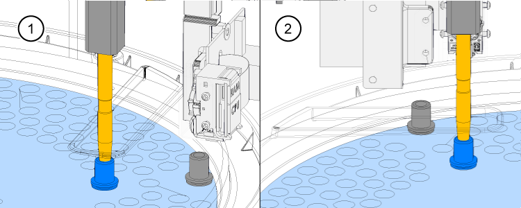
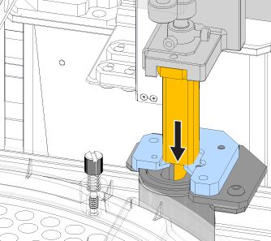
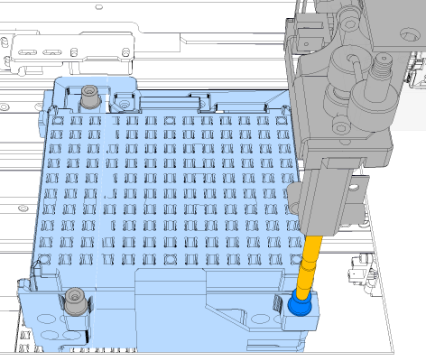
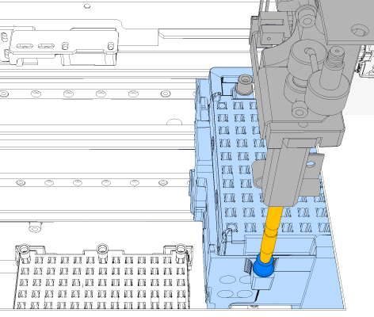
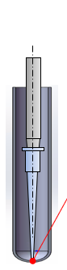

This topic includes information about how to align the aliquot sample pipettor.
Safety Reminder
Servicing the DxI 9000 instrument involves potential risks for pinch and puncture, electrical shock, and exposure to hazardous materials. You must mitigate these risks by taking appropriate countermeasures. See
Safety for more information.
Prerequisites
Before you begin an alignment procedure:
If you must make changes to the instrument's hardware, you must complete those changes before you prepare the instrument for adjustments and alignments.
You must verify that alignments have previously been completed on the instrument. To verify, in the Machine Control App go to
Menu > Prototype Alignment to open the Prototype Alignment page and to verify the
Finalize Instrument Alignments button is
GRAY in color. If the button is
BLUE in color, do not complete this procedure. Instead, you must first complete manual alignments.
You must first initialize the instrument to a
GREEN (Ready) status to ensure all subsystems have been successfully initialized and homed. You must then enter the instrument into a
BLUE (Maintenance) status.
Additional Requirements
Important: After you align the aliquot sample pipettor, you must calibrate the pressure sensor and camera, check the collision sensor, and complete verification. See the following topics for more information:
Note: If the instrument enters into a
RED (Stopped) status:
Verify the interlock switch is in the correct position.
Be sure you are signed in to use the BeckmanAdmin account.
In the Console App go to
Menu > Tools > Diagnostics > Intrusive Diagnostics and select
Start Session.
Complete all troubleshooting, adjustments, manual alignments, and maintenance necessary to be able to initialize the instrument to a
GREEN (Ready) status.
Select the
SYSTEM RUNNING button and go to
Stop > Pause to enter the instrument into a
YELLOW (Paused) status.
Aligning the Aliquot Sample Pipettor to the Sample Wheel
Perform this procedure to align the aliquot sample pipettor to the sample wheel.

In the Console App go to
Menu > Tools > Diagnostics > Intrusive Diagnostics and select
Start Session.
In the Machine Control App go to
Menu > Prototype Alignment to open the Prototype Alignment page.
Go to
Aliquot Sample Pipettor > Aliquot Sample Pipettor to Sample Wheel - Inner.
Note: Make sure there is no tip on the mandrel before moving it into position.
Select
Move To Position. The pipettor and wheel should both move and the mandrel tip should be seated in the inner alignment pin recess on the wheel.
Figure 324:

Select
Disable All and be sure the tip of the mandrel is seated flush within the alignment pin.
Warning: DO NOT grab the mandrel and move it directly. Use the idler pulley and belt to move the mandrel.
Select
Measure All. The sample pipettor and wheel should return to their home positions.
Select
Save All to save the alignments.
Select
Move To Position. Verify that the mandrel has aligned with the wheel alignment pin.
Select
Home All.
Repeat this procedure for the
Aliquot Sample Pipettor to Sample Wheel - Outer alignment pin recess on the wheel.
Figure 325:
Aligning the Aliquot Sample Pipettor to the SPU Presentation Shuttle
Perform this procedure to align the aliquot sample pipettor to the SPU presentation shuttle.
In the Console App go to
Menu > Tools > Diagnostics > Intrusive Diagnostics and select
Start Session.
In the Machine Control App go to
Menu > Prototype Alignment to open the Prototype Alignment page.
Go to
Aliquot Sample Pipettor > Aliquot Sample Pipettor to SPU - Inner.
Note: Make sure there is no tip on the mandrel before moving it into position.
Select
Move To Position. The pipettor and SPU presentation shuttle should both move and the mandrel tip should now be seated in the alignment recess at the rear of the shuttle.
Select
Disable All and be sure the tip of the mandrel is seated flush within the alignment recess.
Warning: DO NOT grab the mandrel and move it directly. Use the idler pulley and belt to move the mandrel.
Select
Measure All. The sample pipettor and carriage should return to their home positions.
Select
Save All to save the alignments.
Select
Move To Position. Verify that the mandrel is aligned with the shuttle alignment recess.
Select
Home All.
Repeat this procedure for the
Aliquot Sample Pipettor to SPU - Outer alignment point, which is on the SPU toward the front of the SPU carriage.
Figure 326:
Aligning the Aliquot Sample Pipettor to the Solid Waste Chute
Perform this procedure to align the aliquot sample pipettor to the solid waste chute.
In the Console App go to
Menu > Tools > Diagnostics > Intrusive Diagnostics and select
Start Session.
In the Machine Control App go to
Menu > Prototype Alignment to open the Prototype Alignment page.
Go to
Aliquot Sample Pipettor > Aliquot Sample Pipettor to Tip Solid Waste.
Note: Make sure there is no tip on the mandrel before moving it into position.
Select
Move To Position. The pipettor should move, and the mandrel and the white housing should now be seated in the alignment recess at the top of the tip waste chute.
Figure 327:

Select
Disable All. Be sure the white housing of the mandrel is now seated flush within the alignment recess.
Warning: DO NOT grab the mandrel and move it directly. Use the idler pulley and belt to move the mandrel.
Select
Measure All. The sample pipettor should return to its home position.
Select
Save All to save the alignments.
Select
Move To Position. Verify that the mandrel is aligned with the tip solid waste chute.
Aligning the Aliquot Sample Pipettor to the Tip Supply Tray Carrier
Perform this procedure to align the aliquot sample pipettor to the tip supply tray carrier.
In the Console App go to
Menu > Tools > Diagnostics > Intrusive Diagnostics and select
Start Session.
In the Machine Control App go to
Menu > Prototype Alignment to open the Prototype Alignment page.
Go to
Aliquot Sample Pipettor > Aliquot Sample Pipettor to Tip Supply - Bottom Left..
Note: Make sure there is no tip on the mandrel before moving it into position.
Select
Move To Position. The pipettor and carrier should both move and the mandrel tip should now be seated in the alignment pin recess on the carrier.
Figure 328:

Select
Disable All. Be sure the tip of the mandrel seats flush within the alignment pin.
Warning: DO NOT grab the mandrel and move it directly. Use the idler pulley and belt to move the mandrel.
Select
Measure All. The sample pipettor and carrier should return to their home positions.
Select
Save All to save the alignments.
Select
Move To Position. Verify that the mandrel is now aligned with the carrier alignment pin.
Select
Home All.
Repeat this procedure for the following additional alignment locations:
Figure 329: Aliquot Sample Pipettor to Tip Supply - Top Left

Figure 330: Aliquot Sample Pipettor to Tip Supply - Top Right
Aligning the Aliquot Sample Pipettor to the Lab Automation System (LAS)
Perform this procedure to set the aspiration point for the aliquot sample pipettor when connected to an LAS.
Important: This procedure assumes the system is in position and properly adjusted for the Y-axis. (The sample aliquot pipettor can be centered over the aliquot position on the automation track.) If you must change the Y-axis adjustment, see
Physically Connecting the DxI 9000 to a Lab Automation System (LAS) for more information about positioning and physically connecting the LAS.
In the Console App go to
Menu > Tools > Diagnostics > Intrusive Diagnostics and select
Start Session.
Place a 13x100mm sample tube at the LAS aspiration point.
Important: Close the aspiration point gripper "fingers" to be sure it remains securely in place throughout the process.
Important: Use only plastic sample containers when working with the LAS.
In the Machine Control App go to
Menu > Prototype Alignment to open the Prototype Alignment page.
Go to
Aliquot Sample Pipettor > Aliquot Sample Pipettor to Automation.
Select
Disable All to disable the motors.
Warning: DO NOT grab the mandrel and move it directly. Use the idler pulley and belt to move the mandrel.
Place a tip on the end of the mandrel.
Move the pipettor to the aspiration point.
Note: Use a clean tip from a supply that is external to the instrument. Using tips from the instrument supply may result in a hardware error later when the system tries to pick up a tip that is not found.
Lower the tip so it is touching the bottom center of the tube.

Select
Measure All. The sample pipettor should return to its home position.
Select
Save All to save the alignments.
Select
Move To Position. Verify that the mandrel is now aligned with the sample tube.